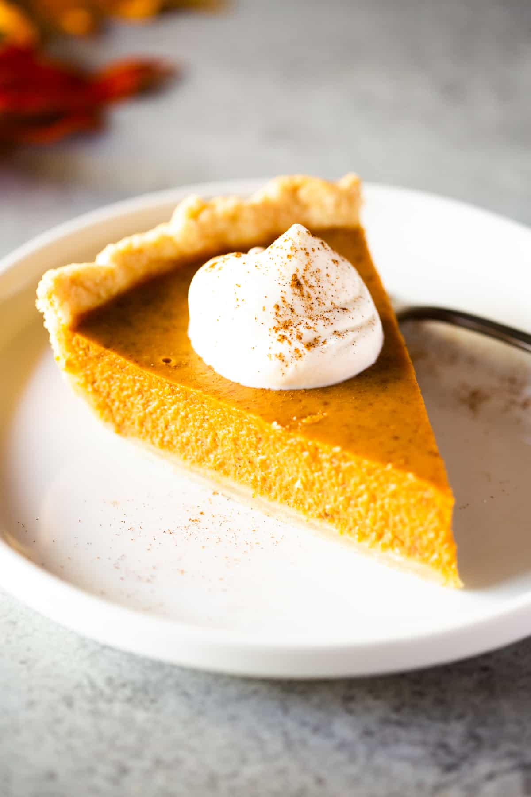

Pumpkin Pie Recipe

Description
Pumpkin pie is a delicious dessert, especially enjoyed in the fall and during Thanksgiving. It has a smooth, spiced pumpkin filling in a flaky crust. The filling is made with pumpkin puree, eggs, sugar, and spices like cinnamon and nutmeg. The pie is baked until golden-brown, resulting in a creamy and flavorful treat. Often served with whipped cream, pumpkin pie is a classic symbol of cozy and festive autumn moments.
Ingredients
- 1 (15 ounce) can pumpkin puree
- 1 (14 ounce) can Eagle Brand Sweetened Condensed Milk
- 2 large eggs
- 1 teaspoon ground cinnamon
- ½ teaspoon ground ginger
- ½ teaspoon ground nutmeg
- ½ teaspoon salt
- 1 (9 inch) unbaked pie crust
Steps
- Gather all ingredients and preheat the oven to 425 degrees F (220 degrees C).
- Whisk pumpkin puree, condensed milk, eggs, cinnamon, ginger, nutmeg, and salt together in a medium bowl until smooth.
- Pour into crust.
- Bake in the preheated oven for 15 minutes.
- Reduce oven temperature to 350 degrees F (175 degrees C) and continue baking until a knife inserted 1 inch from the crust comes out clean, 35 to 40 minutes. Let cool before serving.
- Enjoy!